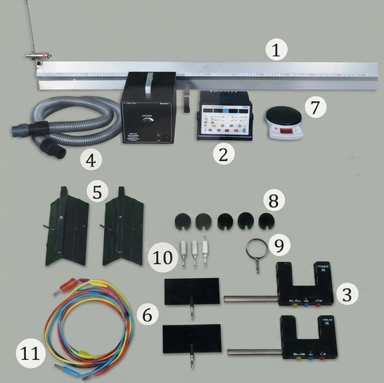
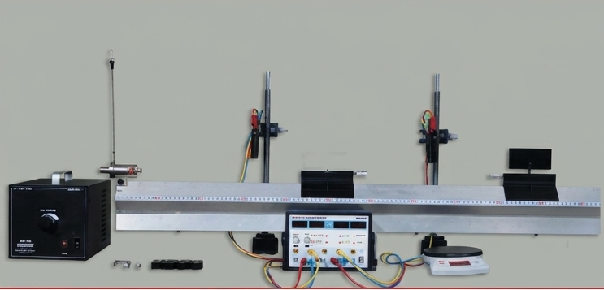
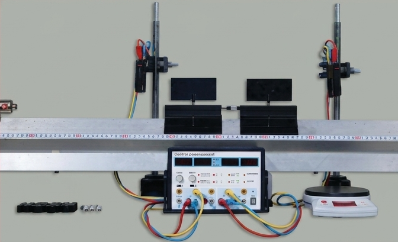

Chương V: Động lượng
Bài 30: Thực hành
Xác định động lượng của vật trước và sau va chạm
Có hai xe chuyển động va chạm vào nhau thì động lượng các xe thay đổi. Em hãy nêu các trường hợp có thể xảy ra và dự đoán sau va chạm hai xe chuyển động như thế nào. Làm thế nào xác định được động lượng của hai xe trước và sau va chạm bằng dụng cụ thí nghiệm, từ đó kiểm nghiệm định luật bảo toàn động lượng?
I. Dụng cụ thí nghiệm
- Băng đệm khí (1).
- Đồng hồ đo thời gian hiện số (2).
- Hai cổng quang điện (3).
- Bơm nén khí (4).
- Hai xe trượt (5).
- Hai tấm cản quang (6).
- Cân điện tử (7).
- Một số quả nặng (8).
- Lò xo hoặc thanh nhựa hình chữ U để mắc dây cao su đàn hồi (9).
- Chốt ghim (10).
- Các dây nối (11).

Hình 30.1. Bộ dụng cụ thí nghiệm xác định động lượng trước và sau va chạm
II. Thiết kế phương án thí nghiệm
Để hai xe va chạm trên đệm khí, có thể thực hiện như sau:
- Điều chỉnh cho băng đệm khí nằm ngang và lắp ống dẫn khí từ bơm nén khí vào băng đệm khí.
- Lắp hai cổng quang điện vào hai giá đỡ đặt cách nhau một khoảng.
- Nối dây từ hai cổng quang điện vào đồng hồ đo thời gian hiện số.
- Lắp tấm cản quang và các chốt cắm thích hợp lên mỗi xe và đặt hai xe lên băng đệm khí.
- Cấp điện cho bơm nén khí và đồng hồ đo thời gian hiện số.


Đẩy cho hai xe chuyển động va chạm vào nhau trên đệm khí và thảo luận:
Câu hỏi 1: Khi hai xe chuyển động trên đệm khí nằm ngang, hệ hai xe chuyển động có phải là hệ kín không? Vì sao?
Trả lời: Hệ hai xe có thể coi là một hệ kín. Vì đệm khí triệt tiêu gần như hoàn toàn lực ma sát, đồng thời trọng lực tác dụng lên xe cân bằng với phản lực của mặt phẳng ngang. Do đó tổng ngoại lực tác dụng lên hệ bằng 0.
Câu hỏi 2: Để xác định động lượng của hai xe trước và sau va chạm cần đo các đại lượng nào?
Trả lời: Cần đo: Khối lượng của hai xe \( m_1, m_2 \); Độ rộng của tấm cản quang \( d \); Thời gian chắn cổng quang điện trước va chạm (\( t_1, t_2 \)) và sau va chạm (\( t'_1, t'_2 \)) để suy ra vận tốc.
Câu hỏi 3: Hãy thử các trường hợp mà em đã dự đoán và suy nghĩ làm thế nào đo được các đại lượng để xác định động lượng của hai xe trước và sau va chạm.
Trả lời: Dùng cân điện tử đo khối lượng. Dùng đồng hồ hiện số kết nối cổng quang điện chế độ A<->B hoặc A, B để đo thời gian tấm cản quang đi qua cổng quang. Tính \( v = \frac{d}{t} \) rồi tính \( p = m \cdot v \).
Câu hỏi 4: Thiết kế phương án thí nghiệm để xác định động lượng của hai xe trước và sau va chạm tương ứng với các trường hợp va chạm có thể xảy ra.
Trả lời:
- Trường hợp 1 (Va chạm mềm): Gắn chốt ghim (đinh) và sáp dính vào 2 xe để chúng dính vào nhau sau va chạm.
- Trường hợp 2 (Va chạm đàn hồi): Gắn lò xo đàn hồi hoặc vòng cao su để 2 xe nảy ra sau khi va chạm.
III. Tiến hành thí nghiệm
Thí nghiệm 1: Va chạm mềm
Hai xe chuyển động va chạm vào nhau, sau va chạm hai xe dính vào nhau và chuyển động với cùng vận tốc.
Hình 30.2. Bố trí thí nghiệm xác định động lượng trong trường hợp va chạm mềm
- Bố trí thí nghiệm như Hình 30.2.
- Lắp tấm cản quang vào xe và các chốt cắm thích hợp lên hai xe, sau đó cân khối lượng xe và ghi vào Bảng 30.1.
- Cấp điện cho bơm nén khí và đồng hồ đo thời gian, điều chỉnh tốc độ của bơm nén khí thích hợp, cho đồng hồ đo thời gian hoạt động ở chế độ đo thời gian vật chắn cổng quang điện.
- Ấn nút Reset trên mặt đồng hồ để đưa số chỉ của đồng hồ về 0.000.
- Đặt xe 2 lên băng đệm khí giữa hai cổng quang điện, đặt xe 1 ở khoảng bên ngoài hai cổng quang điện.
- Đẩy xe 1 va chạm vào xe 2.
- Lần lượt đọc trên đồng hồ các khoảng thời gian \( t_1 \), \( t_2 \) và ghi vào Bảng 30.1.
- Gắn thêm vào xe các gia trọng, lặp lại các bước 4, 5, 6, 7 hai lần.
Thí nghiệm 2: Va chạm đàn hồi
Hai xe chuyển động va chạm vào nhau, sau va chạm hai xe chuyển động về hai phía ngược nhau.
Hình 30.3. Thí nghiệm xác định động lượng trong trường hợp va chạm đàn hồi
- Bố trí thí nghiệm như Hình 30.3.
- Gắn lò xo (hoặc thanh nhựa hình chữ U có dây cao su đàn hồi) vào 1 xe. Cân hai xe và ghi vào Bảng 30.2.
- Đặt hai xe lên băng đệm khí ở vị trí giữa hai cổng quang. Lấy sợi dây nhỏ buộc hai xe để nén lò xo lại. Ấn nút Reset trên mặt đồng hồ.
- Cắt sợi dây để lò xo bung ra, đẩy hai xe về hai phía.
- Lần lượt đọc trên đồng hồ các khoảng thời gian \( t_1 \), \( t_2 \) và ghi vào Bảng 30.2.
- Gắn thêm vào hai xe các gia trọng, lặp lại các bước 3, 4, 5 hai lần nữa.
IV. Kết quả thí nghiệm
Bảng 30.1. Thí nghiệm va chạm mềm
Độ dài tấm cản quang: \( d = \dots \) (m)
| Lần | \( m_1 \) | \( m_2 \) | Trước va chạm | Sau va chạm | ||||||
|---|---|---|---|---|---|---|---|---|---|---|
| \( t_1 \) | \( v_1 \) | \( p_1 \) | \( p_2 \) | \( p \) | \( t'_1 \) | \( v'_1 = v'_2 \) | \( p' \) | |||
| 1 | ||||||||||
| 2 | ||||||||||
| 3 | ||||||||||
Bảng 30.2. Thí nghiệm va chạm đàn hồi
| Lần | \( m_1 \) | \( m_2 \) | Trước va chạm (Hệ đứng yên) | Sau va chạm (Cắt dây lò xo bung) | ||||||
|---|---|---|---|---|---|---|---|---|---|---|
| \( t_1 \) | \( v_1 \) | \( p_1 \) | \( p_2 \) | \( t_2 \) | \( v'_2 \) | \( p'_1 \) | \( p'_2 \) | |||
| 1 | ||||||||||
| 2 | ||||||||||
| 3 | ||||||||||
Nhận xét và đánh giá kết quả thí nghiệm
Yêu cầu 1: Từ Bảng 30.1 và Bảng 30.2, hãy so sánh các kết quả xác định động lượng của hai xe trước và sau va chạm trong hai thí nghiệm.
Trả lời: Trong cả hai thí nghiệm (va chạm mềm và va chạm đàn hồi bung lò xo), tổng động lượng của hệ trước va chạm và sau va chạm gần như bằng nhau. Sai số nhỏ giọt do ma sát và sai số dụng cụ đo. Điều này khẳng định Định luật bảo toàn động lượng trong hệ kín.
Yêu cầu 2: Em có thể đề xuất một phương án thí nghiệm khác để xác định động lượng của hai xe trước và sau va chạm.
Trả lời: Có thể sử dụng máng nghiêng và hai viên bi. Dùng giấy than và giấy trắng lót trên mặt bàn. Cho bi 1 lăn từ mặt phẳng nghiêng đập vào bi 2 (đang đứng yên ở mép bàn). Dựa vào tầm xa rơi của bi trên giấy trắng (vết in qua giấy than) có thể tính được vận tốc ném ngang, từ đó gián tiếp tính động lượng.
📚 Em đã học
Sử dụng băng đệm khí, cổng quang và đồng hồ đo thời gian hiện số có thể tiến hành thí nghiệm xác định động lượng của vật trước và sau va chạm đối với va chạm mềm, va chạm đàn hồi.
💡 Với cuộc sống (Lưu ý)
Để tiến hành thí nghiệm chính xác, cần đặt máng ngang và giảm ma sát ít nhất có thể (đó là lí do người ta dùng hệ thống đệm khí).
⚙️ Em có thể
Sử dụng điện thoại thông minh và phần mềm phân tích video để xác định được vận tốc và động lượng trước và sau va chạm của hai viên bi có khối lượng xác định.

Hình 30.4. Thiết kế thí nghiệm xác định động lượng bằng phần mềm
❓ Em có biết?
Trong thiết kế ô tô, ngoài túi khí và dây an toàn trên ô tô, nhà sản xuất còn tạo ra "vùng hấp thụ xung lượng của lực" - đó là phần khung thép mềm hơn các vùng khác.
\( \Delta\vec{p} = \vec{F} \cdot \Delta t \)
Khi có va chạm, độ biến thiên động lượng của xe trong một khoảng thời gian bằng xung của lực tác dụng lên xe trong khoảng thời gian đó. Vùng hấp thụ sẽ biến dạng giúp xe giảm tốc độ chậm hơn, kéo dài thời gian va chạm (\( \Delta t \)) để giảm lực tác dụng (\( \vec{F} \)), giúp giảm chấn thương cho người ngồi trong xe.
LUYỆN TẬP & CỦNG CỐ
A. Bài tập tự luận (Tính toán)
Bài 1: Một xe trượt khối lượng \( m_1 = 0,2 \text{ kg} \) chuyển động với vận tốc \( v_1 = 2 \text{ m/s} \) đến va chạm mềm với xe trượt thứ hai khối lượng \( m_2 = 0,3 \text{ kg} \) đang đứng yên. Tính vận tốc của hệ hai xe sau va chạm.
Giải:
Áp dụng định luật bảo toàn động lượng cho hệ 2 xe (va chạm mềm):
\( m_1 \vec{v}_1 + m_2 \vec{v}_2 = (m_1 + m_2) \vec{V} \)
Vì xe 2 đứng yên (\( v_2 = 0 \)), chiếu lên chiều chuyển động của xe 1:
\( m_1 v_1 = (m_1 + m_2) V \Rightarrow V = \frac{m_1 v_1}{m_1 + m_2} = \frac{0,2 \cdot 2}{0,2 + 0,3} = \frac{0,4}{0,5} = 0,8 \text{ (m/s)} \)
Bài 2: Một viên đạn khối lượng \( 10 \text{ g} \) bay ngang với vận tốc \( 500 \text{ m/s} \) găm vào một bao cát khối lượng \( 4,99 \text{ kg} \) đang treo treo trên dây đứng yên. Tính vận tốc của bao cát (cùng đạn) ngay sau khi viên đạn găm vào.
Giải:
Đổi \( m_1 = 10 \text{ g} = 0,01 \text{ kg} \). Đây là bài toán va chạm mềm.
Bảo toàn động lượng theo phương ngang:
\( m_1 v_1 = (m_1 + m_2) V \)
\( V = \frac{0,01 \cdot 500}{0,01 + 4,99} = \frac{5}{5} = 1 \text{ (m/s)} \)
Bài 3: Tại sao khi nhảy từ trên cao xuống đất, người ta lại phải gập đầu gối lại?
Giải:
Dựa vào độ biến thiên động lượng và xung lượng của lực: \( \Delta\vec{p} = \vec{F} \cdot \Delta t \)
Khi chạm đất, động lượng của người giảm về 0 (độ biến thiên động lượng \( \Delta p \) là xác định). Việc gập đầu gối giúp kéo dài thời gian tương tác \( \Delta t \) giữa chân và mặt đất. Do \( \Delta p \) không đổi, \( \Delta t \) tăng thì lực tác dụng \( F \) từ mặt đất lên chân sẽ giảm đi đáng kể, giúp cơ thể tránh bị chấn thương.
B. Bài tập Trắc nghiệm
Câu 1 - Đáp án B: Động lượng là một đại lượng vectơ, cùng hướng với vận tốc. Công thức: \( \vec{p} = m \cdot \vec{v} \).
Câu 2 - Đáp án C: Trong mọi loại va chạm trong hệ kín, động lượng luôn được bảo toàn. Động năng chỉ bảo toàn trong va chạm đàn hồi.
Câu 3 - Đáp án D: Đơn vị chuẩn là kg.m/s. Ngoài ra theo định lí xung lượng \( \Delta p = F \cdot \Delta t \), đơn vị còn là N.s (Newton nhân giây).
Câu 4 - Đáp án B: Đệm khí thổi không khí nâng xe lên, giúp xe không tiếp xúc trực tiếp với đường ray, từ đó triệt tiêu ma sát để hệ trở thành hệ kín lí tưởng.
Câu 5 - Đáp án C: Dựa vào \( F = \frac{\Delta p}{\Delta t} \). Vùng thép mềm biến dạng làm tăng thời gian va chạm \( \Delta t \), dẫn đến lực va đập \( F \) truyền vào khoang lái giảm đi, bảo vệ người ngồi.